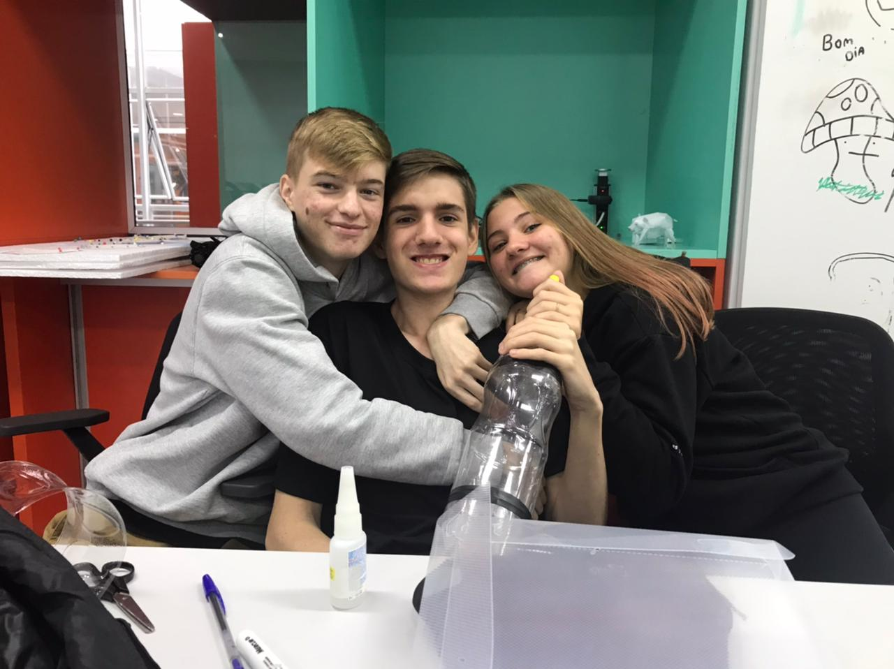
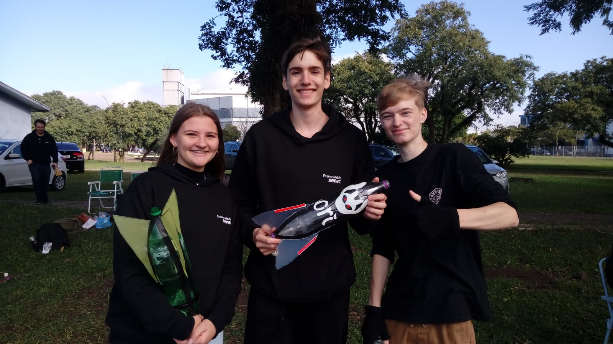
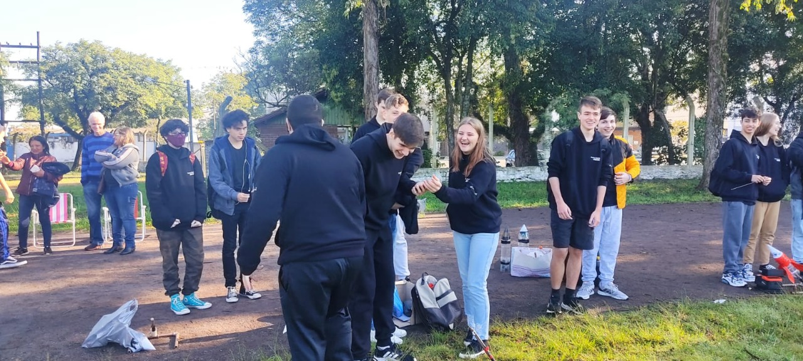

Esse site é sobre o nosso foguete, que foi lançado no dia 07 de maio de 2022
Na nossa opinião, o nosso foguete funcionou muito bem com os químicos e que teve colaboração da nossa mesa, o grupo Sayonara e de cada um dos membros da equipes e deus pais!
Assista alguns vídeos e veja algumas fotos dos testes que fizemos:



Os pontos ruins sobre o nosso foguete, foi que nos testes ele havia voado 60m e no dia do lançamento ele voou apenas 38,30m, o que nos deixou meio chateados pois colocamos muita esperança nesse foguete e esperávamos que ele tivesse voado mais alto e também que nosso primeiro lançamento não deu certo, o que nos fez perder metade da esperança que tínhamos.
Como já descrito antes, criamos muita expectativa e que na hora de lançar não foram alcançadas, porém, ficamos muito felizes com o resultado e acreditamos que fizemos o que estava ao nosso alcance.
Construímos ele com garrafa pet, cano PVC, bicarbonato de sódio, vinagre, pasta para fazer a azaletas,fita isolante, prego, rolha e enforca gato. Primeiro montamos a base com os canos de PVC, rolha, prego e com os enforca gatos, e o foguete nós fizemos com garrafa pet e as azaletas com a pasta, passamos fita em quase todo o foguete.
Nosso foguete ao decolar fez um movimento curvilíneo!
Para poder entrar em órbita, é preciso que um foguete possa atingir cerca de 28.440 km/h, a fim de escapar da gravidade terrestre, que o puxa sempre para baixo. Os comumente usados pela indústria espacial usam a hidrazina e o tetróxido de nitrogênio. Segundo o responsável pelo projeto, o doutor em físico-química, Ricardo Vieira, o quilo do combustível produzido por eles em laboratório custa R$ 35, o usado atualmente em satélites e foguetes custa R$ 1 mil. A Crew Dragon Resilience tem lugar para seis tripulantes, mas irão somente quatro passageiros. Alguns não passam dos 20 metros de altura, enquanto outros são maiores que um prédio de 20 andares. Os componentes superior e inferior possuem 9 metros de largura, com o Super Heavy medindo 70 metros de altura e a nave estelar medindo 50 metros de altura.
FASE SOBRE A RAMPA: o foguete percorre a sua rampa de lançamento ou lançador, partindo de velocidade nula. FASE PROPULSADA: etapa durante a qual o motor-foguete está em funcionamento. FASE BALÍSTICA: o motor-foguete não está em funcionamento e não há sistema de recuperação ativo (pára-quedas ou fita). Esta fase divide-se em: a) ascendente: o foguete continua a ganhar altitude; e b) descendente: o foguete está em queda-livre. FASE SUSTENTADA: o foguete está em queda mas sustentado por pára-quedas ou fita. FASE TERMINAL: o foguete está em queda mas com velocidade constante.
pedro werner, Thomas Etges e Manuela trevisan